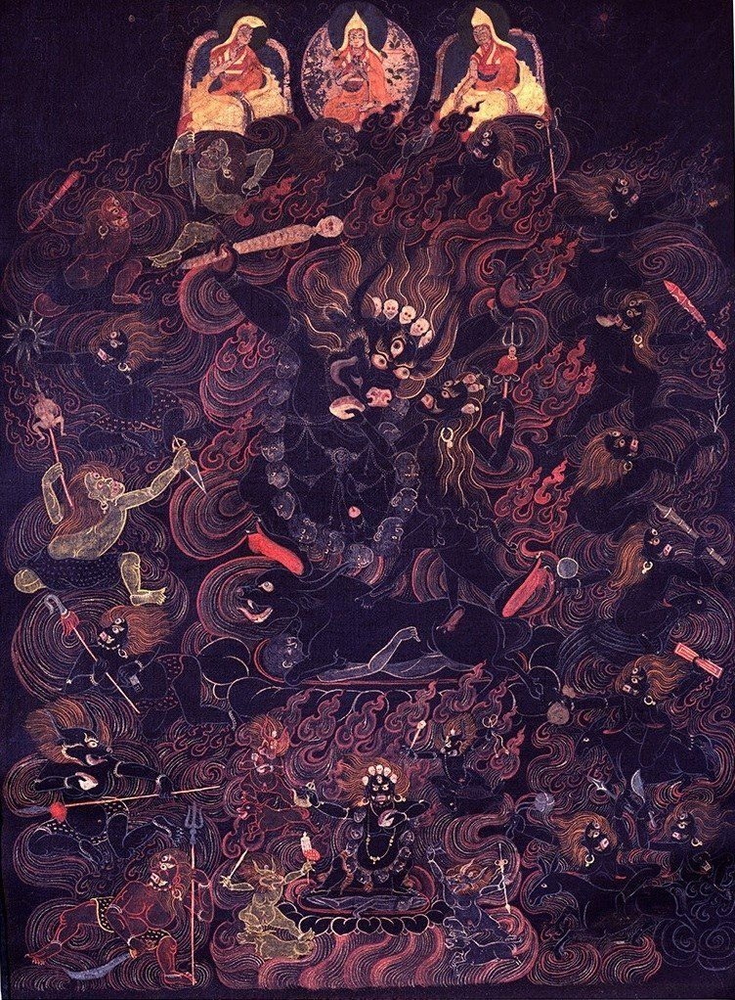

Contact Us
Get in Touch
Have a question about a thangka you own, a symbol you cannot identify, or a topic you would like us to cover? Send us a message using the form below and we will reply as soon as we can.

Have a question about a thangka you own, a symbol you cannot identify, or a topic you would like us to cover? Send us a message using the form below and we will reply as soon as we can.
